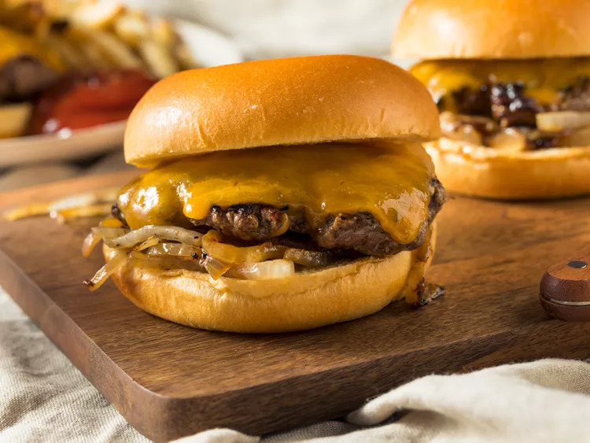

Oklahoma Fried Onion Burger (Smash Burger)

The Oklahoma Fried Onion Burger is one of the “oldest, classic burgers in the world,”
Ingredients
- Ground Meat
- Onions (thinly sliced)
- Buns
- Cheese
- Pickles
- Veggies
Steps
- To make the burger, scoop a ball of hamburger meat onto a hot skillet or outdoor grill.
- Top the ball with a heaping pile of sliced onions.
- Smash the burger down with a spatula, then let the burger cook on both sides (carefully flipping the burger to keep the onions in place)
- If you are adding cheese, add it to the side without the onions so they have more time to cook and caramelize.
- Finally, add the burger and cheese to the buns!